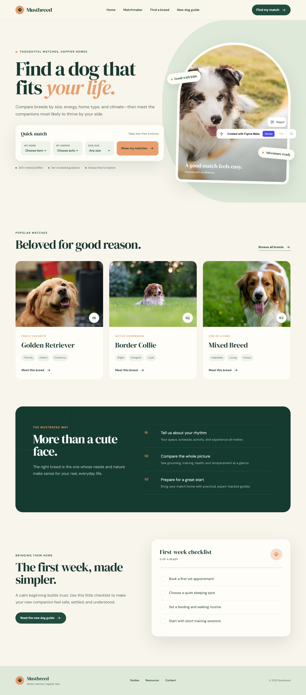
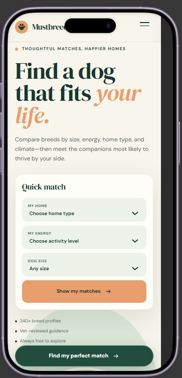
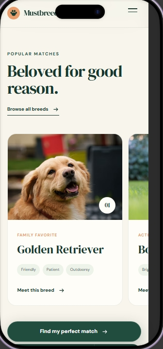
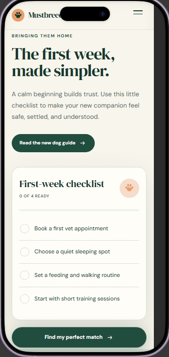

About Me
I grew up watching a lot of dogs get taken to the shelter in all the neighborhood I lived in. I would love to help shelter dog find a home to fix your life-style so that you find a real doggy who you will not give up on and keep for as long as they live and not have to give them back to the shelter.
The whole point of my website is to fit the house and energy you have as well as if you need a smaller dog or a big dog, an older dog will always be less active than a younger dog who want to be more active. Once you put in that information it will give you the best selection of dogs that closest fits your needs. The last to gives you an idea of when the dog can be taken to the vet and what kind of food fits best, and also if the dog needs to take classes as well as if they need active time or just is a couch potato.It is built for Maya, the persona from Milestone 1: a busy first-time dog owner who skims, often on her phone, and wants a confident decision without reading everything.



